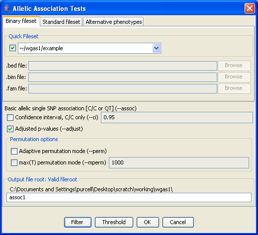

|  |
Association analysisThis is the dialog for basic association analysis (case/control or quantitative trait in unrelated individuals; allelic tests) As you see, the form is similar to the Validate fileset form, but with a few more options. Here we select Adjusted p-values as an extra option. By most options, the corresponding PLINK command flag is given (e.g. --adjust). We specify a unique fileroot (assoc1) and hit OKPrevious | Next |